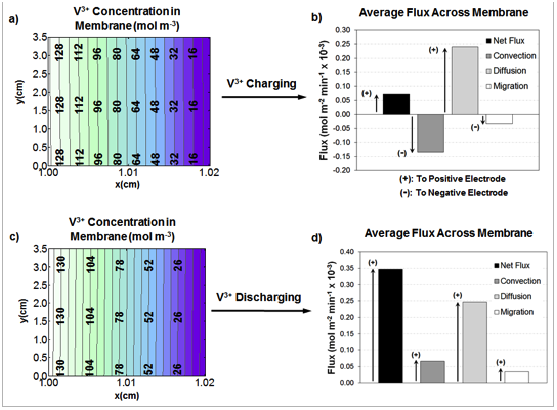

June 15th, 2012 - A new paper on Modeling of crossover in vanadium redox flow battery has been published in Journal of the Electrochemical Society
ECSL team has published a new paper on vanadium redox flow battery titled: "A transient vanadium redox battery performance model in corporation vanadium crossover and water transport through membrane" in Journal of the Electrochemical Society.
Abstract:
The framework for a 2-D, transient, isothermal model of a vanadium redox flow battery is proposed, which incorporates, for the first time, the crossover of vanadium ions through the membrane due to all three transport mechanisms: convection, diffusion, and migration. The model includes the transfer of water between the half-cells and uses a unique approach for simulating the mass transport at the electrolyte|membrane interfaces, which accounts for the discontinuities in concentration and potential and incorporates the effects of side reactions as a result of vanadium crossover. The proposed model further improves upon the accuracy of existing models by incorporating a more complete version of the Nernst equation for predicting the open circuit voltage and by utilizing micro x-ray tomography to experimentally derive the electrode properties, which were used as input parameters. The simulated results accurately predicted the experimental voltage of a single charge/discharge cycle with an average error of 1.83% and predicted the capacity loss of a 45-cycle experiment with an error of 4.2 %. A brief analysis of the results indicated a strong dependance between capacity loss and osmotic convection, and future work was proposed for identifying the fundamental mechanisms of vanadium crossover and the resulting effects on system performance.